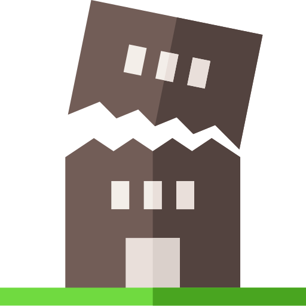

<!DOCTYPE html>
<html>
<meta charset="utf-8" />

<head>
  <link rel="stylesheet" href="https://unpkg.com/leaflet@1.6.0/dist/leaflet.css" />
  <script src="https://unpkg.com/leaflet@1.6.0/dist/leaflet.js"></script>
  <script src="https://code.jquery.com/jquery-3.2.1.js"></script>
  <script src="./@common/dist/leaflet-search-master/src/leaflet-search.js"></script>
  <script src="./@common/dist/Leaflet-MiniMap-master/src/Control.MiniMap.js" type="text/javascript"></script>
  <script src="./@common/dist/Leaflet.MousePosition-master/src/L.Control.MousePosition.js"
    type="text/javascript"></script>

  <link rel="stylesheet" href="./@common/dist/leaflet-search-master/src/leaflet-search.css" />
  <link rel="stylesheet" href="./@common/dist/Leaflet-MiniMap-master/src/Control.MiniMap.css" />
  <link rel="stylesheet" href="./@common/dist/Leaflet.MousePosition-master/src/L.Control.MousePosition.css" />
  <script src="./src/BarriosGJ.geojson"></script>

  <style>
    #map {
      width: 100%;
      height: 98vh;
      box-shadow: 5px 5px 5px #888;
    }

    .info {
      padding: 6px 8px;
      font: 14px/16px Arial, Helvetica, sans-serif;
      background: white;
      background: rgba(255, 255, 255, 0.8);
      box-shadow: 0 0 15px rgba(0, 0, 0, 0.2);
      border-radius: 5px;
    }

    .info h2 {
      margin: 0 0 5px;
      color: #777;
    }

    .legend {
      opacity: 0.9;
    }
  </style>
</head>

<body>
  <div id="map"></div>
  <script>

    const data = dataBarrio;

    const getGeoserverLayer = (name, attribution) => (
      L.tileLayer.wms("http://localhost:8080/geoserver/wms", {
        layers: name,
        format: 'image/png',
        transparent: true,
        attribution
      })
    )

    const gs_url = 'http://{s}.google.com/vt/lyrs=m&x={x}&y={y}&z={z}'
    const subdomains = ['mt0', 'mt1', 'mt2', 'mt3']

    const google_streets = L.tileLayer(gs_url, { maxZoom: 20, subdomains })
    const google_streets_min = new L.TileLayer(gs_url, { minZoom: 0, maxZoom: 13, subdomains })
    const googleMaps = L.tileLayer('http://www.google.cn/maps/vt?lyrs=s@189&gl=cn&x={x}&y={y}&z={z}', {
      attribution: '&copy; <a href="google.com">&nbsp; OpenStreetMap</a>contributors', maxZoom: 18
    });

    const gFuenteHidrica = getGeoserverLayer('final:fuentehidrica', 'Fuente Hidrica')
    const gBufferCurvasQuebrada = getGeoserverLayer('final:buffercurvasquebrada', 'Buf. Curvas Quebrada')
    const gCallePrincipal = getGeoserverLayer('final:calleprincipal', 'Vía Principal')
    const gCalleSecundaria = getGeoserverLayer('final:callesecundaria', 'Vía Secundaria')
    const gBufferBarrioRiesgo = getGeoserverLayer('final:barrios_dentrodebufferriesgo', 'Buf. Barrio Riesgo')
    const gZonaRiesgo = getGeoserverLayer('final:zonariesgo', 'Zona Riesgo')
    const gZonaInvasion = getGeoserverLayer('final:zonainvasion', 'Zona Invasión')
    const gZonaBoscosa = getGeoserverLayer('final:zonaboscosa', 'Zona Boscosa')
    const gBarrio = getGeoserverLayer('final:pbarrio', 'Barrio')
    const gManzana = getGeoserverLayer('final:manzana', 'Manzana')
    const gLimiteDepartamental = getGeoserverLayer('final:limitedepartamental', 'Lim Departamental')

    const baseMaps = {
      "Google Street": google_streets,
      "Google Earth": googleMaps
    }

    var overlayMaps = {
      " Fuente Hidrica": gFuenteHidrica,
      " Calle Principal": gCallePrincipal,
      " Calle Secundaria": gCalleSecundaria,
      " Barrio Riesgo": gBufferBarrioRiesgo,
      " Zona Riesgo Quebrada": gBufferCurvasQuebrada,
      " Zona Riesgo": gZonaRiesgo,
      " Zona Invasión": gZonaInvasion,
      " Zona Boscosa": gZonaBoscosa,
      " Barrio": gBarrio,
      " Manzana": gManzana,
      " Lim Departamental:": gLimiteDepartamental
    };

    var overlayMapsVr2 = {
      " Manzana": gManzana,
      " Calle Principal": gCallePrincipal,
      " Calle Secundaria": gCalleSecundaria,
      " Zona Riesgo": gZonaRiesgo,
      " Zona Boscosa": gZonaBoscosa,
      " Zona Invasión": gZonaInvasion,
      " Barrio Riesgo": gBufferBarrioRiesgo,
      " Fuente Hidrica": gFuenteHidrica,
      " Lim Departamental": gLimiteDepartamental,
      " Zona Riesgo Quebrada": gBufferCurvasQuebrada,
    };

    var map = L.map('map', {
      center: [1.6202867, -75.6306709],
      zoom: 15,
      layers: [
        googleMaps,
        gFuenteHidrica,
        gCallePrincipal,
        gCalleSecundaria,
        gZonaRiesgo,
        gZonaInvasion,
        gZonaBoscosa,
        gManzana,
        gLimiteDepartamental,
        gBufferCurvasQuebrada,
        gBufferBarrioRiesgo
      ],
      scrollWheelZoom: true,
    });

    const scale = L.control.scale({ imperial: false, position: 'bottomright' })
    scale.addTo(map)

    const mousePosition = L.control.mousePosition()
    mousePosition.addTo(map)

    const miniMap = new L.Control.MiniMap(google_streets_min, { toggleDisplay: true, position: 'bottomleft' })
    miniMap.addTo(map)

    const title = L.control()
    title.onAdd = (map) => {
      let div = L.DomUtil.create('div', 'info')
      div.innerHTML += '<h2>VISOR WEB PARA LA PROBLEMÁTICA DE LAS INVASIONES</h2><h2>CERCA DE LA “QUEBRADA EL DEDO” EN EL BARRIO</h2><h2>CIUDADELA HABITACIONAL SIGLO XXI</h2>'
      return div
    }
    title.addTo(map)

    var legend = L.control({ position: 'bottomright' });
    legend.onAdd = function (map) {
      var div = L.DomUtil.create('div', 'info legend');
      div.innerHTML +=
        '';
      return div;
    };
    title.addTo(map);

    legend.addTo(map);

    function BarrioHover(e) {
      var layer = e.target;
      layer.setStyle({
        fillColor: '#DAF7A6',
        weight: 2,
        color: '#000000',
        dashArray: '',
        fillOpacity: 0.2
      });
    }

    function RestartHover(e) {
      barrios.resetStyle(e.target);
      info.update();
    }

    function Zoom(e) {
      map.fitBounds(e.target.getBounds());
    }

    /* console.log('data', data)
    const featuresLayer = new L.GeoJSON(data, {
      style: function (feature) {
        return { color: feature.properties.color };
      },
      onEachFeature: function (feature, marker) {
        marker.bindPopup("<strong>" + feature.properties.nombre + "</strong>"),
          marker.on({
            mouseover: BarrioHover,
            mouseout: RestartHover,
            click: Zoom
          });
      }
    });
    map.addLayer(featuresLayer);

    var searchControl = new L.Control.Search({
      layer: featuresLayer,
      propertyName: 'nombre',
      marker: false,
      moveToLocation: function (latlng, title, map) {
        var zoom = map.getBoundsZoom(latlng.layer.getBounds());
        map.setView(latlng, zoom);
      }
    });

    searchControl.on('search:locationfound', function (e) {
      e.layer.setStyle({ fillColor: '', color: '#FF5733' });
      if (e.layer._popup)
        e.layer.openPopup();
    }).on('search:collapsed', function (e) {
      featuresLayer.eachLayer(function (layer) {
        featuresLayer.resetStyle(layer);
      });
    });

    map.addControl(searchControl); */

    const owsrootUrl = 'http://localhost:8080/geoserver/ows'
    const defaultParameters = {
      service: 'WFS',
      version: '1.0.0',
      request: 'GetFeature',
      typeName: 'final:pbarrio',
      outputFormat: 'application/json'
    }
    const parameters = L.Util.extend(defaultParameters)
    const URL = owsrootUrl + L.Util.getParamString(parameters)

    $.ajax({
      url: URL,
      success: (data) => {
        const barrios = new L.geoJson(data, {
          /* style: function (feature) {
            return { color: feature.properties.color };
          }, */
          pointToLayer: (feature, latlng) => L.circleMarker(latlng, pointStyles),
          onEachFeature: (feature, layer) => {
            layer.bindPopup("<strong>" + feature.properties.nombre + "</strong>"),
              layer.on({
                mouseover: BarrioHover,
                mouseout: function RestartHover(e) {
                  barrios.resetStyle(e.target);
                  info.update();
                },
                click: Zoom
              })
          }
        })
        barrios.addTo(map)

        const searchControl = new L.Control.Search({
          layer: barrios,
          propertyName: 'nombre',
          marker: false
        })
        searchControl.on('search:locationfound', (e) => {
          e.layer.setStyle({ fillColor: '#1209BD', color: '#FF5733' })
          if (e.layer._popup)
            e.layer.openPopup()
        })
        searchControl.on('search:collapsed', (e) => {
          barrios.eachLayer((layer) => barrios.resetStyle(layer))
        })
        map.addControl(searchControl)

        overlayMapsVr2 = {
          " Manzana": gManzana,
          " Barrio": barrios,
          " Calle Principal": gCallePrincipal,
          " Calle Secundaria": gCalleSecundaria,
          " Zona Riesgo": gZonaRiesgo,
          " Zona Boscosa": gZonaBoscosa,
          " Zona Invasión": gZonaInvasion,
          " Barrio Riesgo": gBufferBarrioRiesgo,
          " Zona Riesgo Quebrada": gBufferCurvasQuebrada,
          " Fuente Hidrica": gFuenteHidrica,
          " Lim Departamental": gLimiteDepartamental
        }

        const layers = L.control.layers(baseMaps, overlayMapsVr2, { collapsed: false })
        layers.addTo(map)
      }
    })
  </script>
</body>

</html>